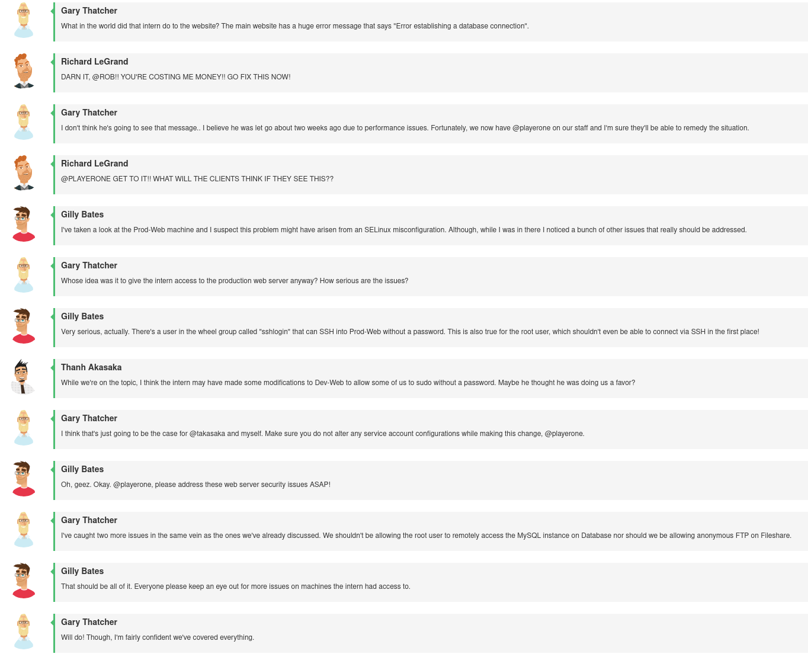
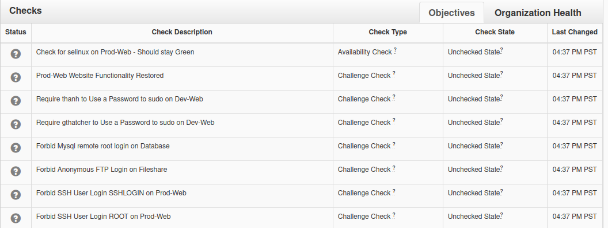
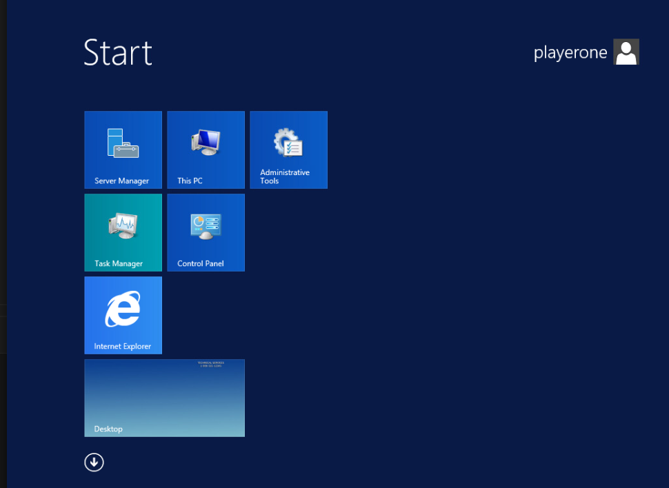
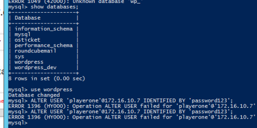
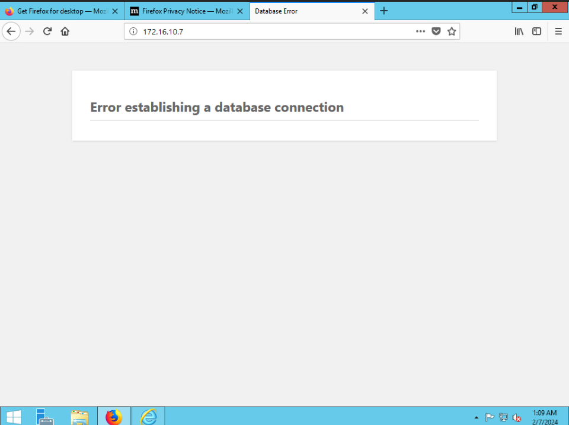
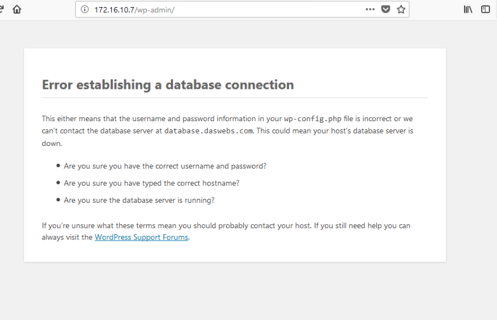
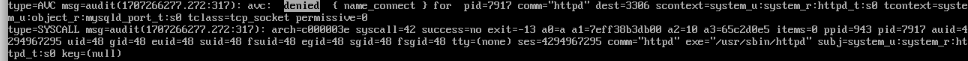
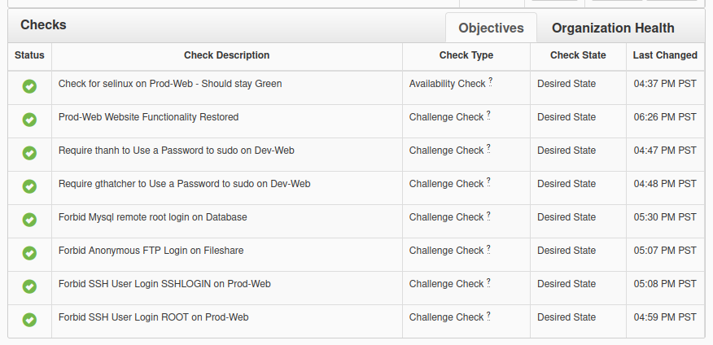

Nice Challenge 2
This is for the NICE challenge. This challenge was quite a bit harder than the previous one, as it required that I figure out an selinux issue.
Whenever you see ... in my code, it’s shorthand for “contents omitted for brevity”. I use this to clip extra long text files down, fitting them into my blog.
Same as before, the introduction was a simulated chatroom:

And here are the checks:

Dev-Web
I just edited the sudo file with sudo visudo
#
# This file MUST be edited with the 'visudo' command as root.
#
# Please consider adding local content in /etc/sudoers.d/ instead of
# directly modifying this file.
#
# See the man page for details on how to write a sudoers file.
#
Defaults env_reset
Defaults mail_badpass
Defaults secure_path="/usr/local/sbin:/usr/local/bin:/usr/sbin:/usr/bin:/sbin:/bin:/snap/bin"
# Host alias specification
# User alias specification
# Cmnd alias specification
# User privilege specification
root ALL=(ALL:ALL) ALL
# Members of the admin group may gain root privileges
%admin ALL=(ALL) ALL
# Allow members of group sudo to execute any command
%sudo ALL=(ALL:ALL) ALL
# See sudoers(5) for more information on "#include" directives:
#includedir /etc/sudoers.d
Defaults:nagios !syslog
Defaults:nagios !requiretty
nagios ALL=(ALL:ALL) NOPASSWD:ALL
gthatcher ALL = NOPASSWD: ALL
thanh ALL = NOPASSWD: ALLI edited the last two lines:
gthatcher ALL = (ALL:ALL) ALL
thanh ALL = (ALL:ALL) ALLAnd both checks were passed.
Database
I load the html server console up… and I see this:

I load up powershell, and the mysql client is there, so that works.

USE wordpress;
CREATE USER 'playerone'@'*' IDENTIFIED BY 'password123';
DELETE FROM mysql.user WHERE User='root' AND Host NOT IN ('localhost', '127.0.0.1', '::1');
FLUSH PRIVILEGES;With this, root no longer has remote access to the database.
Prod-Web
The first was to disable ssh login of the user’s “root” and “SSHLOGIN”.
The former was easy, I just changed the config file:
/etc/ssh/sshd_config
....
PermitRootLogin no
....Except this didn’t pass the check, so I decided to look into the other configuration option, DenyUsers.
/etc/ssh/sshd_config
....
DenyUsers root sshlogin
....Frustratingly, the sshlogin user is not all caps, even though the check describes it as so, but it also describes root as ROOT.
This still failed, until I restarted the sshd service, at which point both checks succeed.
Trying to load the database from the “database machine”, which offers a GUI, I see this:

Trying to load /wp-admin, the wp admin console, gives me a little more info.

So I decide to go look at the file:
/var/www/html/config.php
<?php
/**
* The base configuration for WordPress
*
* The wp-config.php creation script uses this file during the
* installation. You don't have to use the web site, you can
* copy this file to "wp-config.php" and fill in the values.
*
* This file contains the following configurations:
*
* * MySQL settings
*/
// ** MySQL settings - You can get this info from your web host ** //
/** The name of the database for WordPress */
define( 'DB_NAME', 'wordpress' );
/** MySQL database username */
define( 'DB_USER', 'playerone' );
/** MySQL database password */
define( 'DB_PASSWORD', 'password123' );
/** MySQL hostname */
define( 'DB_HOST', 'database.daswebs.com' );
/** Database Charset to use in creating database tables. */
define( 'DB_CHARSET', 'utf8mb4' );
/** The Database Collate type. Don't change this if in doubt. */
define( 'DB_COLLATE', '');
/**#@+
* Authentication Unique Keys and Salts.
*
* Change these to different unique phrases!
* You can generate these using the {@link https://api.wordpress.org/secret-key/1.1/salt/ WordPress.org secret-key service}
* You can change these at any point in time to invalidate all existing cookies. This will force all users to have to log in again.
*
* @since 2.6.0
*/
define( 'AUTH_KEY', 'ea355b607a03e1dc4fdbf0b6307b05303073e640');
define( 'SECURE_AUTH_KEY', 'f33aec49919d2584c113a0c97e6fe6521c899ceb');
define( 'LOGGED_IN_KEY', 'c366b663c1d82456edb8e88c592013f6c93b54e9');
define( 'NONCE_KEY', '1d210afe29e77dd29dd6c444314b6b3d5389f47d');
define( 'AUTH_SALT', '5ed4f5d28661e0b29b4651e051907704e517e81d');
define( 'SECURE_AUTH_SALT', '98c1307b17e104f4b0f9d17771cd3f6fe781b60e');
define( 'LOGGED_IN_SALT', 'bcb58b6319635fa3f6fed8154e8e56f151a1bd18');
define( 'NONCE_SALT', '796f651b2fbb7175080e390b31a68ea08dca928f');
/**#@-*/
/**
* WordPress Database Table prefix.
*
* You can have multiple installations in one database if you give each
* a unique prefix. Only numbers, letters, and underscores please!
*/
$table_prefix = 'wp_';
....
....I had to do some commands on the “database machine”, since it seems that something was likely wrong there.
USE wordpress;
CREATE USER 'playerone'@'*' IDENTIFIED BY 'password123';
GRANT ALL PRIVILEGES ON wordpress.* TO 'playerone'@'*';
GRANT ALL PRIVILEGES ON wordpress TO 'playerone'@'*';
FLUSH PRIVILEGES;But this wasn’t enough. Wordpress still could not connect to the database. I checked to make sure the mysql service was running, and that the firewall was open, both were the case. An nmap scan from the wordpress server sees the port open, and the service, as well.
I was even able to authenticate to the database from the webserver machine manually, using the mysql client included in the mariadb package.
So it’s likely an SELinux issue, as mentioned in the meeting notes.
Sure enough, when searching through the logs, I find something:

I used this: https://serverfault.com/a/456875 for steps.
[root@www~]# getsebool -a | grep httpd
...
...
httpd_can_connect_mythtv --> off
httpd_can_connect_zabbix --> off
httpd_can_network_connect --> off
httpd_can_network_connect_cobbler --> off
httpd_can_network_connect_db --> off
httpd_can_network_memcache --> off
httpd_can_network_relay --> off
httpd_can_sendmail --> off
...
...It seems as if the apache httpd server doesn’t have permissions for that port.
Following those steps:
setsebool httpd_can_network_connect_db 1
setsebool httpd_can_network_connect_db 1 -PAnd httpd can connect to the database!
Passed Checks
